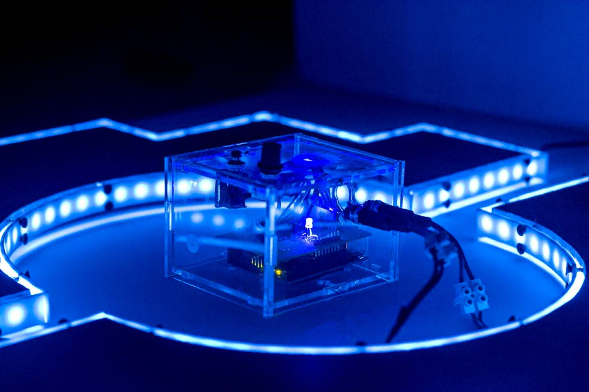
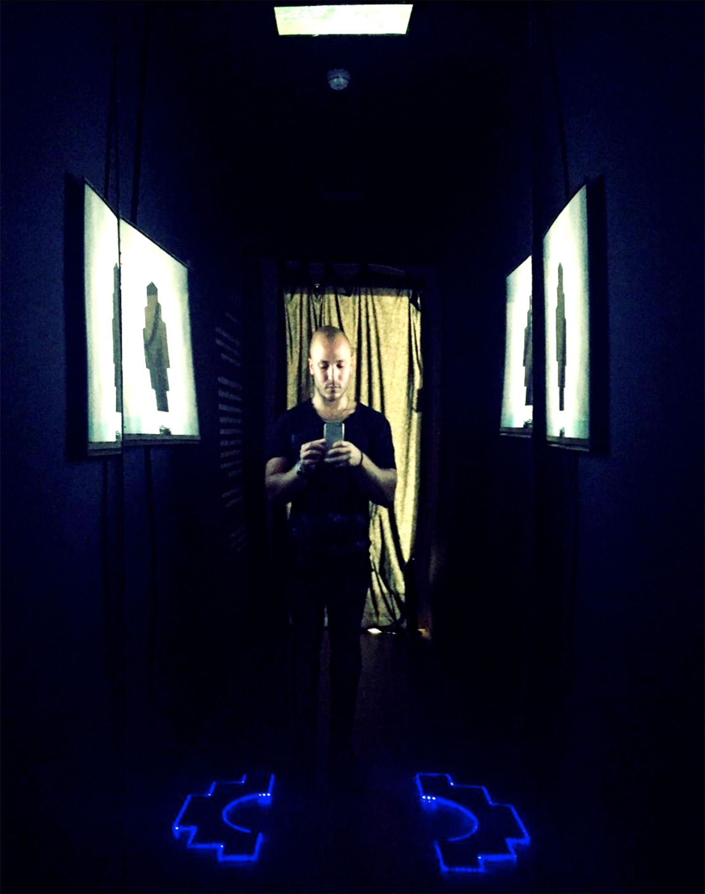

ONA

Ona is a luminous synchronisation device that create a quiet and mystical environment that allowed viewers to perceive the visual and sound subtleties present in the installation. It has a simple interface from where to regulate the intensity, speed and patterns of the led strips that surround the image of the Andean cross. At the same time this device had the function of pointing out the ideal space to perceive the sounds coming from a unidirectional speaker that reproduced voices of the Selknam Indians.
Luminous synchronisation device for immersive audiovisual installation
installation immersion audio-reactive

Exhibitions
- Open Borders. Palazzo Mora, European Cultural Centre, Venice, 2017.
Credits
- Main Project Direction and Sound Design Joaquín Gómez, Tomás Terzano
- Light synchronisation and programming Mario Guzman, with Agustín Ramos Anzorena
- Production Juana Carranza Vélez
- Film Footage Ben Sturgulewski
Source: www.pleek.net/projects/ona.html